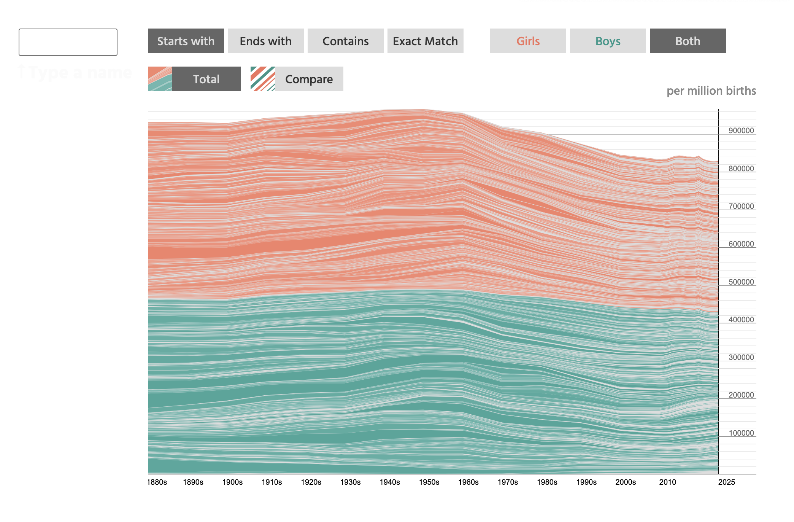

Personal Data Visualization
Take measure of your surroundings
NameGrapher
Laura and Martin Wattenberg’s approach to name their firstborn
https://namerology.com/baby-name-grapher/

## Your Turn
Did you first check your own name?
How many names start with a vowel?
Lautner or Swift? Which Taylor has more influence on baby names?
What about Orange and Pink as kids’ names?
Praerie Dog Town
From a college-level course on Spatial Ecology: use GPS coordinates from a morning of measuring out a praerie dog town
Your Turn
What data could you collect and visualize with your class?
Reading logs? Habits?
The letter project: how long does it take to get the letter?
e.g. Henry Kristin’s project
Relationship between Distance travelled and Time
From Kristin Henry’s blog:
Which of these two charts do you like better for showing the relationship between distance travelled and days to reach destination?
What chart would you suggest to use?
An approximate re-creation of the data
Using Claude AI: “recreate the data from the chart”
AIs can’t ‘see’ for us, even when they just try to regenerate data (Clause was trying to resist because of the large number of overplotted lines)
What patterns did Claude miss?
Re-creation attempt 2
Using Claude AI: “recreate the data from the chart; days are integer; there are only three observations with more than 14 days of time to destination”
What about now?
A different attempt
Based on a (larger) dataset published by Kristin Henry
And now a Scatterplot
What do you see?
–
Three clusters
Only for very large distances there is a positive relationship with the number of days to destination
There might be a hint of a positive association between the two variables in the first cluster (distances to 1250 miles)


{kind=link}
{kind=link}
{kind=link}
{kind=link}
{kind=link}